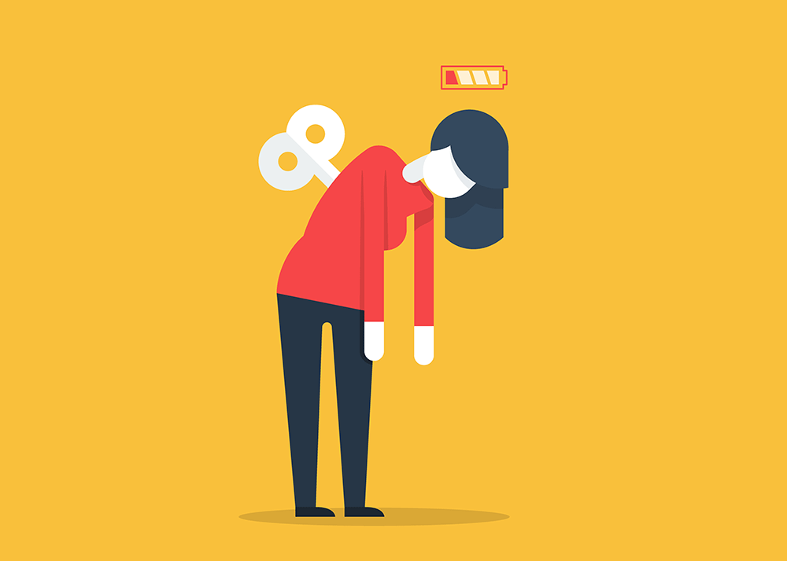
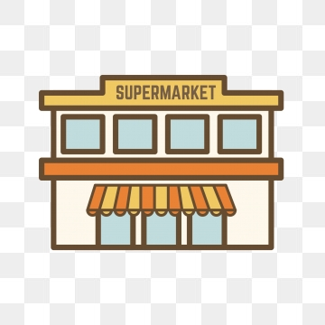

 When we are in a bad mood, we will choose to keep ourselves at home, not to talk to others and to stay for a whole day.This is the method of deportation that many people choose when they are depressed, but this is not healthy.
When the human body does not move, their thinking will be more active. But the person who is in a bad mood, the most taboo is cranky thinking. Because people at that time tend to get into a dead end, thinking more will increase the depression.
Therefore, even if you are lazy and do not want to move, you also have to force yourself to go out for a walk when you are in a bad mood. Shopping in the supermarket is the preferred place to go.
Chinese writer Gu Long once said: "If a person has no way out, and do something that is not good for himself, let him go to the vegetable market."
Go to the market to see the vegetables with drops of water, look at the live fish and shrimp, Look at the little couple holding hands and bargaining with the stall owner for one dollar to win, and look at the old people pushing the car and speaking in an accent about the various trivial things in his life...
Everything in front of us tells that life is still alive and hot. Those who laugh and roar are hot and enthusiasm about life. Life is not only mourning and anxiety, but also the most authentic human fireworks.
After reading these lively and fun activities, what else can't you put it down?